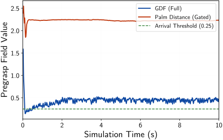

Robot Learning · Control · Simulation
Reinforcement Learning for Robotics
Risk-Sensitive Learning · Demonstration-Guided Policies · Physics-Based Simulation
I develop and evaluate reinforcement learning algorithms for robotics, including risk-sensitive distributional RL, demonstration-guided dexterous manipulation, and residual RL for bimanual assembly.
DAPG Reproduction · MuJoCo / Adroit
From Demonstrations to Learned Dexterous Relocation
I reproduced dexterous relocation results using Rajeswaran et al.’s Demonstration-Augmented Policy Gradient (DAPG) [1] implementation in MuJoCo / Adroit. I initialized a relocation policy with behavior cloning from 25 demonstrations, refined the policy through DAPG training, and evaluated the initial and trained policies over 100 episodes with held-out initial conditions.
The paired execution compares behavior cloning with the trained DAPG policy using the same reset seed and mean actions. The robot must grasp and relocate the object to the green target; the comparison isolates the change in task execution after reinforcement learning.
Expert Demonstrations
25 relocation demonstrations from the authors’ dataset.
Behavior Cloning
Initialize the policy by imitating demonstrated actions.
DAPG Training
Refine the policy with demonstration-augmented policy gradients.
Held-Out Evaluation
Compare behavior cloning and DAPG over 100 episodes.
Training Configuration
| Demonstrations | 25 demonstrations from Rajeswaran et al.; 9,942 samples |
|---|---|
| Training | 5 BC epochs, then 100 DAPG iterations; 4 million control steps |
| Algorithm | Authors’ BC/DAPG implementation and example configuration |
| Runtime | Gymnasium Robotics 1.2.0; MuJoCo 2.3.7 |
| Final Evaluation | Reset seeds 40000–40099; 200 steps per episode; sustained object relocation |
Residual Reinforcement Learning · Drake Simulation
Integrating Residual RL with Bimanual Assembly Control
I adapted Reinforcement Learning with Prior Data (RLPD) [2] to an A7 bimanual arm–hand system, using demonstration data from my feedback controller and online reinforcement learning. I combined bounded residual joint-reference commands with feedback control to execute housing stabilization, part acquisition and transfer, insertion, and hand withdrawal.
The recorded execution follows the complete assembly sequence, from acquisition through insertion and withdrawal. Its focus is coordinated task execution with learned corrections to the robot’s joint references, while feedback control remains part of the control architecture.
I trained a residual policy for seven arm joint references using 6,300 prior transitions and 6,300 online decisions, with 100 actor updates and 2,000 critic updates.
Training Data
Feedback-controller demonstrations and online experience.
RLPD Training
Learn bounded residual commands for arm joint references.
Policy + Feedback Control
Combine learned corrections with the feedback controller during execution.
Bimanual Assembly
Acquire, transfer, align, and insert the part before withdrawal.
Assembly Results by Friction
| Friction | Feedback Controller | Zero Residual | Initial Policy | Updated Policy |
|---|---|---|---|---|
| 0.70 | 1/1 | 1/1 | 4/4 | 4/4 |
| 0.65 | 1/1 | 1/1 | 4/4 | 4/4 |
| 0.60 | 1/1 | 1/1 | 4/4 | 4/4 |
Published Research · IEEE CDC 2025
Risk-Sensitive Distributional Reinforcement Learning
For reach–avoid navigation, I developed quantile-based action-value iteration with a Conditional Value-at-Risk (CVaR) penalty estimated from the distribution of constraint-violation costs [3]. I integrated the risk-sensitive loss with quantile value estimation and evaluated the learned navigation policies in MuJoCo / Safety-Gymnasium. With my coauthors, I established a contraction result for the action-value update.
The navigation demonstration depicts goal-reaching behavior in an environment containing hazards and obstacles. It provides a task-level view of a policy trained to account for constraint-violation costs; the accompanying evaluation compares goal attainment and violation costs across methods.
Goal Attainment and Violation Costs
100 episodes across five evaluation seeds.
| Algorithm | Goals Reached | Violation Cost (Mean ± SD) |
|---|---|---|
| QR-AVI | 239 | 0.05 ± 0.01 |
| Expected-Value QR-AVI | 329 | 0.06 ± 0.01 |
| CVaR QR-AVI, β = 0.90 | 448 | 0.05 ± 0.01 |
| CVaR QR-AVI, β = 0.95 | 448 | 0.05 ± 0.01 |
Algorithm and Implementation
I used quantile regression to estimate action-value distributions and kernel density estimation to estimate constraint-violation cost distributions. I incorporated a CVaR penalty into the quantile loss to account for adverse-tail risk.
Experience Buffer
State transitions, rewards, and constraint-violation costs.
Distribution Estimation
Quantile action values and a constraint-violation cost distribution.
CVaR-Regularized Update
Include adverse-tail cost in the quantile learning objective.
Navigation Evaluation
Measure goal attainment and violation costs over evaluation episodes.
Reward Design · Isaac Lab / PhysX
G1 PPO Reward Evaluation
I trained Proximal Policy Optimization (PPO) policies in 1,024 parallel Isaac Lab environments to evaluate geometric rewards for dexterous pregrasp positioning.
Pregrasp Reward Comparison
For a fixed-base Unitree G1 equipped with a RealHand L6, I designed a Grasp Distance Field reward based on proximity to candidate arm–hand configurations and evaluated policies trained with the GDF reward and policies trained with a palm-to-object distance reward.
Evaluation Results
| Reward Configuration | Pregrasp Arrivals | Lifts |
|---|---|---|
| GDF (Full) | 64 / 64 | 0 / 64 |
| Palm Distance (Gated) | 0 / 64 | 0 / 64 |
I counted a pregrasp arrival when the GDF value fell below 0.25 during an episode, using a smooth minimum of weighted joint-space distances to compute the field value.

References
- Learning Complex Dexterous Manipulation with Deep Reinforcement Learning and Demonstrations.
Aravind Rajeswaran, Vikash Kumar, Abhishek Gupta, Giulia Vezzani, John Schulman, Emanuel Todorov, and Sergey Levine.
Robotics: Science and Systems (RSS), 2018.
arXiv:1709.10087 · Authors’ Implementation - Efficient Online Reinforcement Learning with Offline Data.
Philip J. Ball, Laura Smith, Ilya Kostrikov, and Sergey Levine.
International Conference on Machine Learning (ICML), 2023.
arXiv:2302.02948 · Authors’ Implementation - Safety-Aware Reinforcement Learning for Control via Risk-Sensitive Action-Value Iteration and Quantile Regression.
Clinton Enwerem, Aniruddh G. Puranic, John S. Baras, and Calin Belta.
2025 IEEE 64th Conference on Decision and Control, pp. 4890–4895.
DOI: 10.1109/CDC57313.2025.11312575 · arXiv:2506.06954